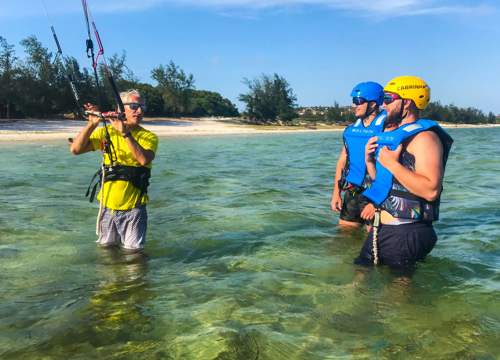
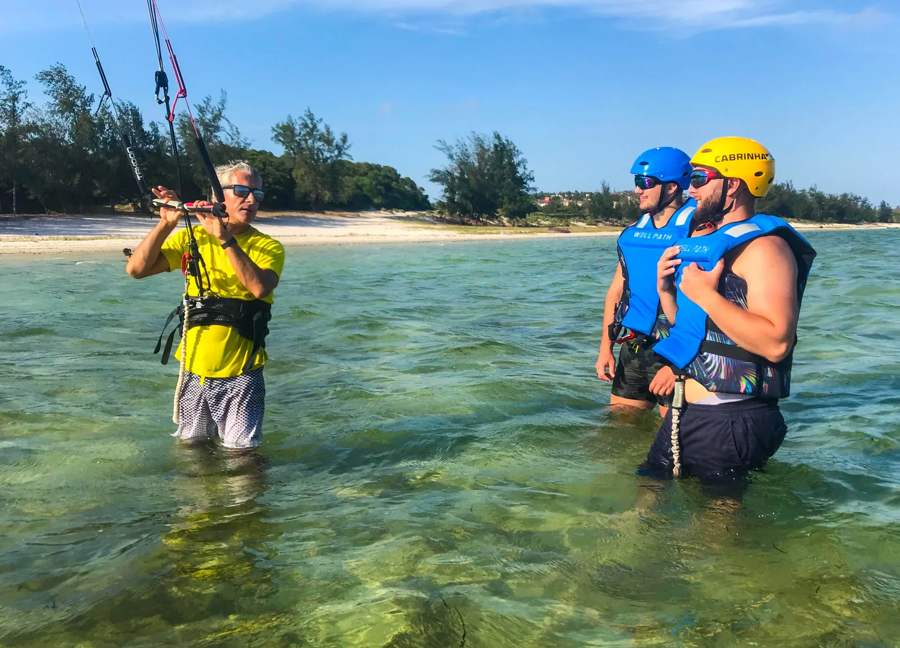
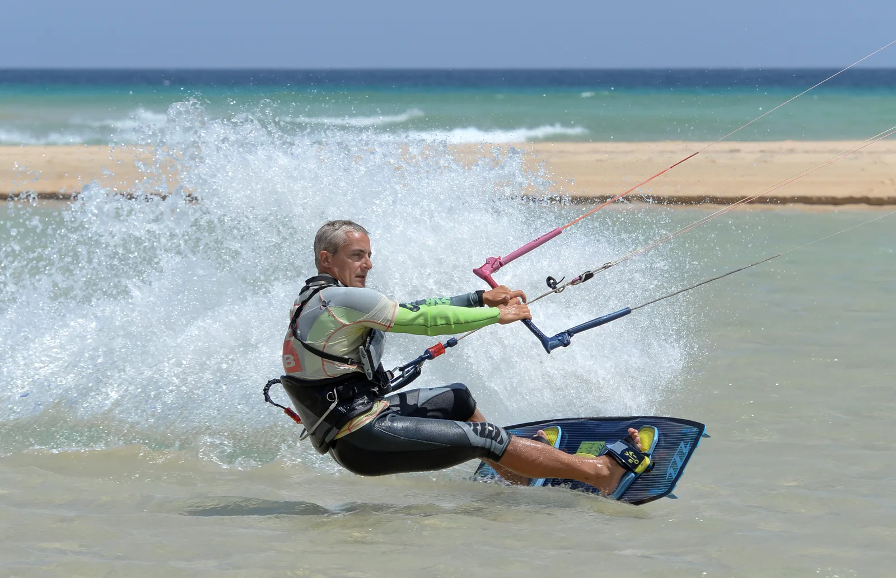
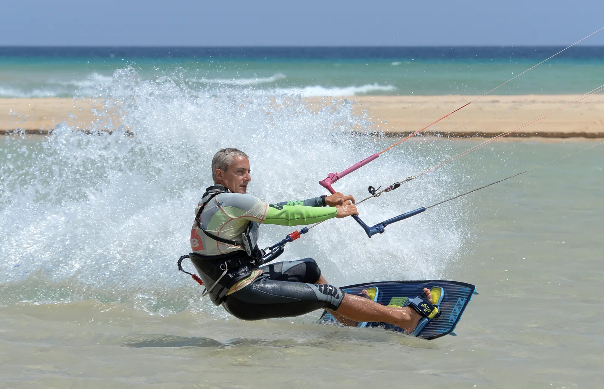
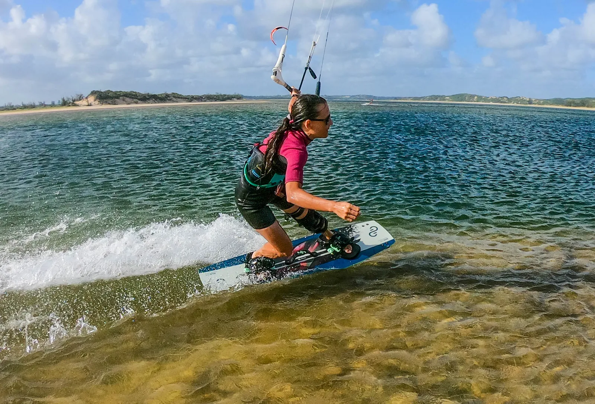
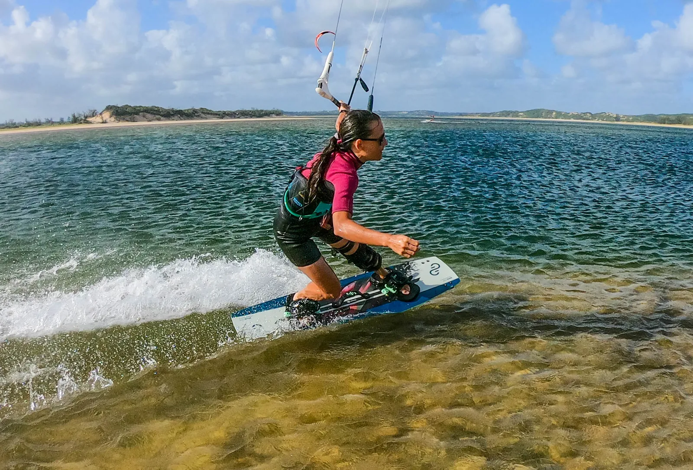

Escuela de Kitesurf
Profesional, seguro, divertido y fácil
Escuela de Kitesurf
Con una ubicación ideal en la laguna, con vientos laterales regulares, la escuela se beneficia de las condiciones ideales para aprender kitesurf. Con más de 5 años de experiencia enseñando kitesurf como instructor IKO, ofrecemos una pedagogía completa en torno a sus estándares. Esto garantiza un aprendizaje seguro en las mejores condiciones para los estudiantes.Nuestros instructores, están equipados con radio para una mejor comunicación constante con los estudiantes. Más información en el lugar
 

Principiantes - iniciación
Descubre el equipamiento, sistemas de seguridad, despegue y aterrizaje, control estático completo de la cometa en menos de 1m de agua. Luego practicaremos body draging, relanzamiento, primeros arranques en waterstarts y primeros metros navegando en la laguna. Nuestras clases, se imparten desde el principio en el agua, con total seguridad y tranquilidad.

Intermedio
Si ya has dado anteriormente tus primeras clases, aquí definitivamente comenzarás a navegar. Equipado con radio, mejorarás tu posición, control de velocidad, downwind y upwind. Luego vendrán las primeras transiciones para no parar nunca al cambiar de dirección. Dependiendo de sus deseos, podemos profundizar su conocimiento de la seguridad, el clima, el conocimiento de los elementos naturales y técnicos para fortalecer tu autonomía en la navegación. Descubrirás que, en la laguna, se aprovechan mucho mejor las horas de clase, puesto que la poca profundidad de agua y la baja afluencia de cometas, evitan que pierdas tiempo en recuperar tu posición o en rescates.
 

Navegación supervisada
A partir de cierto nivel, lo que necesitas para mejorar es practicar. La seguridad de nuestra laguna, nos permite ofrecerte servicio de supervisión: navega a placer por la laguna, sabiendo que alguien tiene siempre puestos los ojos en ti. Con o sin radio, tu supervisor nunca estará lejos para tu seguridad, y para darte algunos buenos consejos.


Avanzado: Entrenamiento
Para cualquier rider autónomo que desee progresar: Saltos, trucos, transiciones, conocimiento y ajustes avanzados de su equipo, en Twintip (tablas clásicas), Strapless (tabla de surf) o foil, el kitesurf tiene la ventaja de multitud de tipos de prácticas, adaptadas a las condiciones o motivaciones de cada uno. Utilizaremos análisis de video y radios en el agua. Serás supervisado por un instructor certificado OLK (One Launch Kiteboarding, el grupo de entusiastas creado por Philippe Ancelin dedicado a la progresión del kitesurf) OLK, la mayor red francesa de escuelas en el extranjero: más información en OLK OLK proporciona videos instructivos gratuitos para ayudarlo a continuar aprendiendo desde casa. tutoriales de OLK
 

Etapa de progresión
Con una duración media de una semana, y adaptable según tus deseos (no olvidemos que también estás de vacaciones). Te ofrecemos un completo curso avanzado de kitesurf. Desde los ajustes más avanzados hasta los trucos más "elegantes", pasando por el aprendizaje de las más pequeñas sensaciones con tu cometa que marcan la diferencia, este curso está dirigido a entusiastas que deseen aumentar su nivel de práctica. El curso incluye: Vídeos informativos, múltiples sesiones filmadas en el agua, video debriefing y mejora diaria de tu estilo en el agua.

Equipo Eleveight
Bilene Kite Center es socio de Eleveight, la marca de cometas en ascenso, creada por entusiastas, para entusiastas. Nuestro centro ofrece una gama completa de cometas, barras y tablas, renovadas cada año. Desde 2022, contamos también con equipamiento para aprender y practicar Wingsurf. Más información sobre Eleveight